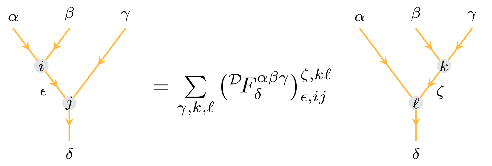
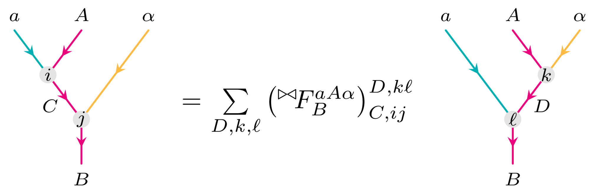

Extending to multifusion category theory
This section will explain how to go from a fusion category to a multifusion category, as well as why one would want to consider the latter. Multifusion categories naturally embed the structure of bimodule categories. To explain this, we must start by explaining module categories over fusion categories, following this up with (invertible) bimodule categories, and finishing off with the multifusion structure.
Module categories
We start from a fusion category $\mathcal{D}$ defined by the triple $(\otimes_\mathcal{D}, \mathbb{1}_\mathcal{D}, {}^\mathcal{D}\!F)$ with simple objects $\alpha, \beta, ... \in \mathcal{I}_\mathcal{D}$. We drop the $\mathcal{D}$ subscript when there is no ambiguity concerning the fusion category. We call its associator
\[{}^\mathcal{D}\!F^{\alpha \beta \gamma}: \alpha \otimes (\beta \otimes \gamma) \rightarrow (\alpha \otimes \beta) \otimes \gamma\]
the monoidal associator. An F-move is now graphically portrayed as:
We can consider the right module category $\mathcal{M}$ over $\mathcal{D}$, which is a category (not necessarily fusion!) with (isomorphism classes of) simple objects $\mathcal{I}_\mathcal{M} = \{A,B,...\}$, a right action
\[\triangleleft: \mathcal{M} \times \mathcal{D} \rightarrow \mathcal{M}\]
and the right module associator
\[{}^\triangleleft\!F^{A\alpha\beta}: A \triangleleft (\alpha \otimes \beta) \rightarrow (A \triangleleft \alpha) \triangleleft \beta.\]
An F-move with this module associator can be expressed as:

The module structure of $\mathcal{M}$ is now defined as the triple $(\mathcal{M}, \triangleleft, {}^\triangleleft\!F)$. The right module associator now satisfies a mixed pentagon equation with ${}^\mathcal{D}\!F$.
Similarly, we can define a left module category $(\mathcal{M}, \triangleright, {}^\triangleright\!F)$ over a fusion category $(\otimes_\mathcal{C}, 1_\mathcal{C}, {}^\mathcal{C}\!F)$. The functor is now a left action of $\mathcal{C}$ on $\mathcal{M}$
\[\triangleright: \mathcal{C} \times \mathcal{M} \rightarrow \mathcal{M},\]
while the left module associator is a natural isomorphism that acts as
\[{}^\triangleright\!F^{abA}: (a \otimes b) \triangleright A \rightarrow a \triangleright (b \triangleright A)\]
for $\mathcal{I}_\mathcal{C} = \{a,b,...\}$. The left module associator also fulfills a mixed pentagon equation with ${}^\mathcal{C}\!F$. An F-move with ${}^\mathcal{C}\!F$ takes on the form:
We can combine the concepts of left and right module categories as follows. Say there are two fusion categories $\mathcal{C}$ and $\mathcal{D}$. A $(\mathcal{C}, \mathcal{D})$-bimodule category is a module category, now defined through a sextuple $(\mathcal{M}, \triangleright, \triangleleft, {}^\triangleright\!F, {}^\triangleleft\!F, {}^{{\triangleright \hspace{-1.2mu}\triangleleft}}\!F)$ such that $(\mathcal{M}, \triangleright, {}^\triangleright\!F)$ is a left $\mathcal{C}$-module category, $(\mathcal{M}, \triangleleft, {}^\triangleleft\!F)$ is a right $\mathcal{D}$-module category, and with additional structure such that the bimodule associator acts as
\[{}^{{\triangleright \hspace{-1.2mu}\triangleleft}}\!F^{aA\alpha}: (a \triangleright A) \triangleleft \alpha \rightarrow a \triangleright (A \triangleleft \alpha)\]
for $a \in \mathcal{I}_\mathcal{C}, \alpha \in \mathcal{I}_\mathcal{D}, A \in \mathcal{I}_\mathcal{M}$. The bimodule associator fulfills a mixed pentagon equation with the module associators. An F-move with ${}^{{\triangleright \hspace{-1.2mu}\triangleleft}}\!F$ is given by:
Opposite module categories
Consider a fusion category $\mathcal{D}$ and a right module category $\mathcal{M}$ over $\mathcal{D}$. We can define $\mathcal{M}^{\text{op}}$ to be the opposite category of $\mathcal{M}$ (Etingof et al., 2009). Then, $\mathcal{M}^{\text{op}}$ is a left module category over $\mathcal{D}$. A similar statement can be made starting from a left module category and getting an opposite right module category. In particular, given a $(\mathcal{C}, \mathcal{D})$-bimodule category $\mathcal{M}$ over the fusion categories $\mathcal{C}$ and $\mathcal{D}$, we see immediately that $\mathcal{M}^{\text{op}}$ is a $(\mathcal{D}, \mathcal{C})$-bimodule category.
Interestingly, due to the opposite actions
\[\triangleleft^{\text{op}}: \mathcal{D} \times \mathcal{M}^{\text{op}} \rightarrow \mathcal{M}^{\text{op}}\]
and
\[\triangleright^{\text{op}}: \mathcal{M}^{\text{op}} \times \mathcal{C} \rightarrow \mathcal{M}^{\text{op}},\]
there is a valid notion of multiplying a module category with its opposite:
\[\mathcal{M} \times \mathcal{M}^{\text{op}} \rightarrow \mathcal{C}, \quad \mathcal{M}^{\text{op}} \times \mathcal{M} \rightarrow \mathcal{D}.\]
Invertible bimodule categories and Morita equivalence
The bimodule categories we consider are restricted to be invertible. This means that this bimodule category fulfills the condition $\mathcal{C} \equiv \mathcal{D}^*_\mathcal{M}$, or in other words the two fusion categories $\mathcal{C}$ and $\mathcal{D}$ are Morita equivalent (or each other's Morita dual with respect to $\mathcal{M}$). Morita equivalence between $\mathcal{C}$ and $\mathcal{D}$ can be shown to hold if and only if the bimodule category fulfills
\[\mathcal{M} \boxtimes_\mathcal{D} \mathcal{M}^\text{op} \simeq \mathcal{C}, \quad \text{and} \quad \mathcal{M}^\text{op} \boxtimes_\mathcal{C} \mathcal{M} \simeq \mathcal{D},\]
where $\boxtimes_\mathcal{C}$ and $\boxtimes_\mathcal{D}$ denote the Deligne product relative to $\mathcal{C}$ and $\mathcal{D}$ respectively. This is precisely the invertibility property of the bimodule category.
Multifusion categories
A fusion category has the important condition that $\mathsf{End}_\mathcal{C}(1_\mathcal{C}) \cong \mathbb{C}$, i.e., the unit of the fusion category is simple. If we drop this condition, then we consider a multifusion category. We assume the multifusion category itself to be indecomposable, meaning it is not the direct sum of two non-trivial multifusion categories. Let us call this multifusion category $\mathcal{C}$. It will be clear in a moment that this will not be ambiguous. Its unit can then be decomposed as
\[1_\mathcal{C} = \bigoplus_{i=1}^r 1_r,\]
i.e., it is decomposed into simple unit objects of the subcategories $\mathcal{C}_{ij} \coloneqq 1_i \otimes \mathcal{C} \otimes 1_j$. With this, we see that the multifusion category itself can be decomposed into its subcategories
\[\mathcal{C} = \bigoplus_{i,j=1}^r \mathcal{C}_{ij}.\]
We call this an $r \times r$ multifusion category. Due to this structure, we represent a simple object in the multifusion category "Name" by
struct BimoduleSector{Name} <: Sector
i::Int
j::Int
label::Int
endi and j specify which subcategory $\mathcal{C}_{ij}$ we are considering, and label selects a particular simple object within that subcategory.
We want to consider multifusion categories because their structure encapsulates that of (bi)module categories. Every diagonal category $\mathcal{C}_{ii} \coloneqq \mathcal{C}_i$ (also known as a component category) is a fusion category, and every off-diagonal category $\mathcal{C}_{ij}$ is an invertible $(\mathcal{C}_{i}, \mathcal{C}_{j})$-bimodule category. That way, as long as we know how the simple objects of the fusion and module categories fuse with one another, and we can determine all the monoidal and module associators, we can treat the multifusion category as one large fusion category with limited fusion rules. In particular, the tensor product
\[\otimes_\mathcal{C}: \mathcal{C}_{ij} \times \mathcal{C}_{kl} \rightarrow \delta_{jk}\mathcal{C}_{il}\]
takes on the same structure as the product of two matrix units. This is not a coincidence; there is a deep relation between multifusion categories and matrix algebras (Etingof et al., 2016; Section 4.3).
Given a subcategory $\mathcal{C}_{ij}$, we can define the left unit as the unit object of the fusion category $\mathcal{C}_i$, while the right unit is the unit object of the fusion category $\mathcal{C}_j$. In other words, the left unit of $\mathcal{C}_{ij}$ is the unique object of the multifusion category $\mathcal{C}$ for which
\[1_i \otimes_\mathcal{C} m_{ij} = m_{ij} \quad \forall m_{ij} \in \mathcal{C}_{ij},\]
and similarly for the right unit of $\mathcal{C}_{ij}$,
\[m_{ij} \otimes_\mathcal{C} 1_j = m_{ij} \quad \forall m_{ij} \in \mathcal{C}_{ij}.\]
We can also immediately see that for a bimodule subcategory $\mathcal{C}_{ij}$, the opposite (bi)module subcategory $\mathcal{C}_{ij}^{\text{op}} \equiv \mathcal{C}_{ji}$, and as expected,
\[\mathcal{C}_{ij} \times \mathcal{C}_{ji} \rightarrow \mathcal{C}_i,\]
just like what we concluded when considering opposite module categories outside of the multifusion structure.
2-category and coloring
Multifusion categories can also be interpreted as 2-categories. We still interpret the objects of this 2-category the same way. The 1-morphisms are the subcategories themselves, and the 2-morphisms the morphisms of the multifusion category. The graphical calculus of monoidal 1-categories can be extended to 2-categories by use of colorings (Henriques and Penneys, 2020). We have previously differed between module strands and fusion strands by the color of the strand itself. However, in 2-categories the strands (1-morphisms) separate regions which are colored based on the fusion categories they are representing. Since we draw the strands vertically, a single strand results in a left and right region, and the colorings will determine the fusion category which fuses from the left or right with that single strand. In particular, fusion strands necessarily have the same coloring on the left and right, while module strands have a mismatching coloring.
The simplest non-trivial fusion diagram is a trivalent junction:
The most general case is the top left figure, where all three regions have a different coloring. The top middle region having the same coloring from the top left and top right strands follow from the delta function in the tensor product definition. However, this most general trivalent junction with three colorings will never be needed. In short, we will always be considering a single bimodule category $\mathcal{C}_{ij}$ at a time, and the only other non-diagonal subcategory which fuses with this is its opposite $\mathcal{C}_{ji}$. This is displayed in the top middle and right. Similarly, two colorings are required when considering the fusion between a fusion and module strand, shown in the bottom left and middle figure. The simplest trivalent junctions boil down to fusions within fusion categories, which is obviously drawn with just one color. This is shown in the bottom right.
With this coloring system, we can specify which associator must be called to perform a particular F-move. Such an F-move would look like
Why opposite module categories end up being necessary in MultiTensorKit
One of the common manipulations which can act on a tensor map is the transposition of vector spaces. We will refer to this as the bending of legs. One of the elementary bends is the right bend, where one of the tensor legs is bent along the right from the codomain to the domain, or vice versa. At the level of the tensor, a covariant index becomes contravariant, or vice versa. Similarly, a left bend can also be performed, bending the leg along the left. This guarantees that legs will not cross, preventing braidings which require extra data known as R-symbols.
Linear algebra tells us that given a (finite-dimensional) vector space $V$ with a basis denoted $\{|e_i\rangle\}$, one can consider the dual vector space $V^*$, whose dual basis $\{\langle e_i^*|\}$ satisfies the property $\langle e_j^* | e_i \rangle = \delta_{ij}$. In the diagrammatic calculus, specifying whether a tensor map leg represents a vector space or its dual is done with an arrow. Following the TensorKit convention, legs with arrows pointing downwards are vector spaces, and arrows pointing upwards state that we are considering its dual. In particular, at the level of fusion trees we can also draw arrows on the strands to denote whether we are considering morphisms between objects or dual objects.
In principle, choosing to bend, e.g., codomain legs to the right and domain legs to left is an arbitrary choice, but would require to distinguish between left and right transposes. However, TensorKit.jl is implemented in a way that does not differentiate the two. In particular, we do not have to worry about this when considering categorical symmetries where, in principle, the left and right dual of an object are not equivalent. This is because this left-right symmetry is guaranteed when considering unitary fusion categories, which is what is done in TensorKit and necessarily in MultiTensorKit.
For this reason, at the level of the fusion trees the topological move that is performed to bend the legs along the right is called a B-move. Graphically, one can show that this bend boils down to a particular F-move. The typical equation found in the literature is the following:
The reason to only consider B-moves is rooted in the choice of canonical form of fusion trees within TensorKit, where fusions are iterated over from left to right and splittings from right to left.
Importantly, we identify the dual vector space labeled by a module category with a vector space labeled by the opposite module category. Consequently,
\[\mathcal{M}^* \simeq \mathcal{M}^\text{op}.\]
In the multifusion setting, this can also be seen graphically. By keeping track of the colorings and the directions of the arrows of the legs, one can see that we need to slightly modify the expression for the B-move to the following:
where by $\mathbb{1}_j$ we mean the unit of $\mathcal{C}_j$.
More on the topological data: gauge choices and distilling properties of the subcategories
An important property of the F-symbols is that they must satisfy the triangle identities. In fusion category theory, this states that isomorphisms between (simple) objects $a$ and the tensor product between $a$ and the unit $\mathbb{1}$ exists, and that
\[(a \otimes \mathbb{1}) \otimes b \cong a \otimes (\mathbb{1} \otimes b)\]
for $b$ in the same fusion category. This can be straightforwardly generalised to multifusion categories. This requires a particular partial gauging of these trivalent vertices.
Besides the triangle identities, the (multi)fusion category must also fulfill the pentagon equations. These encapsulate the two identical manners to evaluating the fusion of four objects in the (multi)fusion category. Every fusion category's F-symbols must satisfy these individually, but also the (bi)module associators between bimodule and fusion categories. One can check that, for every pair of fusion categories, their bimodule category and opposite bimodule category, there are 32 pentagon equations to be satisfied. In the multifusion notation, they can be represented by
The most generic F-move contains 4 colors. For that reason, MultiTensorKit requires the F-symbol data to be provided as some data file (currently .txt) with 4 + 6 + 4 + 2 = 16 columns. The first 4 refer to the colors, the following 6 label the simple objects of the corresponding subcategories, the next 4 label multiplicities, and the final 2 provide the real and imaginary value of the F-symbol itself.
In a similar manner, the N-symbols contain maximally three colors, so these data must provide 3 columns labeling the colors, 3 columns labeling the simple objects and a final column with the dimension of the corresponding vector space.
Besides the B-move (and closely related A-move, which we do not illustrate), we can also see how the quantum dimension and Frobenius-Schur indicator expressions get modified. We already know that an F-move of the form $F^{c \bar{c} c}_{c}$ needs to be evaluated for these topological data, which is in fact another gauge fixing. Graphically, we find
In principle, a gauge fixing can be done to set the Frobenius-Schur indicator to $\pm 1$. However, this assumption is no longer required within TensorKit and can be relaxed to just be a phase.
The above gauge fixing is a property of the unitary gauge. By choosing appropriate bases, one can transform the F-symbols of a (multi)fusion category to be unitary matrices. More details on the importance of unitary topological data can be found in the TensorKit documentation.
Braiding
A very important aspect of MultiTensorKit is that all BimoduleSectors are defined to not support braiding: TensorKitSectors.BraidingStyle(::Type{<:BimoduleSector}) = NoBraiding(). We do this for two reasons. On the one hand, there is no natural 1-categorical way of defining braidings between the components of the multifusion category. It is possible that the diagonal fusion categories themselves are braided, but a "componentwise" braiding is unwise to support. On the other hand, it is entirely possible to write matrix product state manipulations in a planar manner (which has been done in MPSKit), thus avoiding the need of a braiding tensor.
Examples of multifusion categories
Without specifying any of the categories, the simplest non-trivial multifusion category is a $2\times 2$ one, and the categories can be organised in a matrix as
\[\mathcal{C} = \begin{pmatrix} \mathcal{C}_1 & \mathcal{M} \\ \mathcal{M}^{\text{op}} & \mathcal{C}_2\end{pmatrix}.\]
We already identified the off-diagonal elements with module categories over the fusion categories on the diagonal. Accordingly, $\mathcal{M}$ is a $(\mathcal{C}_1, \mathcal{C}_2)$-bimodule category, and $\mathcal{M}^{\text{op}}$ is the opposite module category and a $(\mathcal{C}_2, \mathcal{C}_1)$-bimodule category.
If we take $\mathcal{C}_1 = \mathcal{C}_2 = \mathsf{Rep}(\mathbb{Z}_2)$ and $\mathcal{M} = \mathsf{Vec}$, then the entire multifusion category is Morita equivalent to $\mathsf{Rep}(\mathbb{Z}_2)$, and we view the $\mathbb{Z}_2$-extension of $\mathsf{Rep}(\mathbb{Z}_2)$ to be precisely the $\mathsf{Ising}$ category (Etingof et al., 2009; Section 9) (Etingof et al., 2016; Example 4.10.5). We identify the trivial representation of $\mathsf{Rep}(\mathbb{Z}_2)$ with the unit of $\mathsf{Ising}$, the sign representation with $\psi$ and the unique object of $\mathsf{Vec}$ with the duality object $\sigma$. One can easily check that the fusion rules of $\mathsf{Ising}$ match with those we expect within $\mathsf{Rep}(\mathbb{Z}_2)$ and with its module category $\mathsf{Vec}$. Additionally, the fusion between $\mathsf{Vec}$ and $\mathsf{Vec}^\text{op}$ (and vice-versa) giving every object in $\mathcal{C}_1$ ($\mathcal{C}_2$) is consistent with $\sigma \times \sigma^* = 1 + \psi$. This particular example can be found in TensorKitSectors.
This construction can be generalised to $\mathcal{C}_1 = \mathcal{C}_2 = \mathsf{Rep(G)}$ with $\mathsf{G}$ a finite abelian group, such that the entire multifusion category is Morita equivalent to $\mathsf{Rep(G)}$ and can be evaluated as the Tambara-Yamagami category $\mathsf{TY}(\mathsf{G})$ (with positive Frobenius-Schur indicator for our purposes), and $\mathsf{Vec}$ will represent the duality object which squares to all invertible objects of the original group. To be exact, one of the diagonal fusion categories should be $\mathsf{Vec_G}$ for the correct Morita dual relation, but it is known for abelian groups that this is isomorphic to $\mathsf{Rep(G)}$.